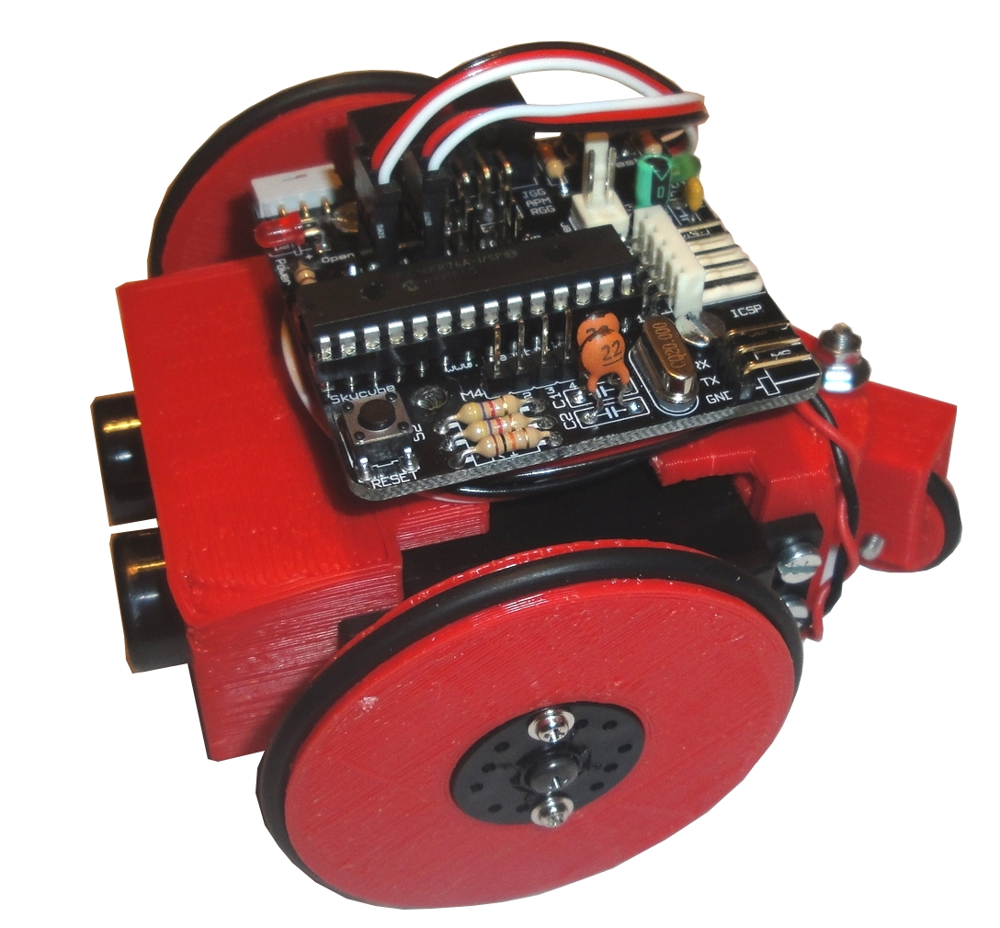
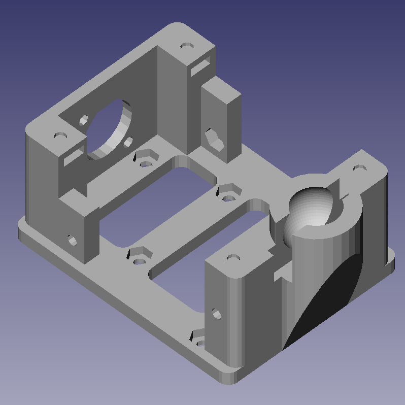
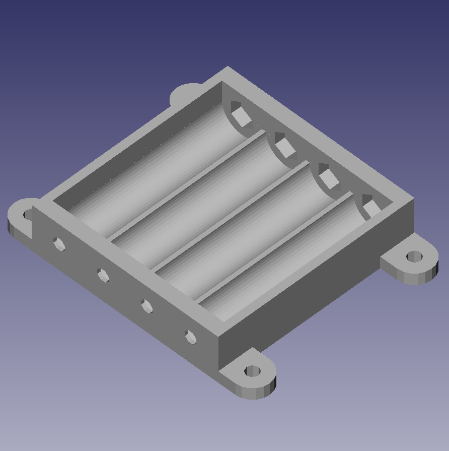
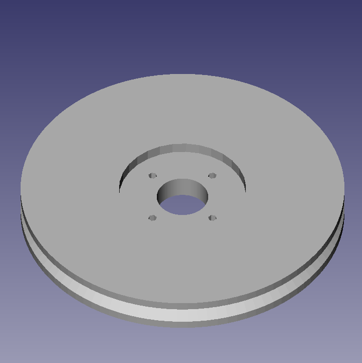
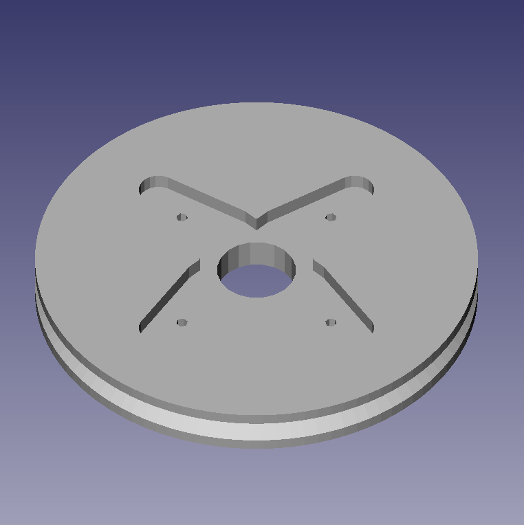
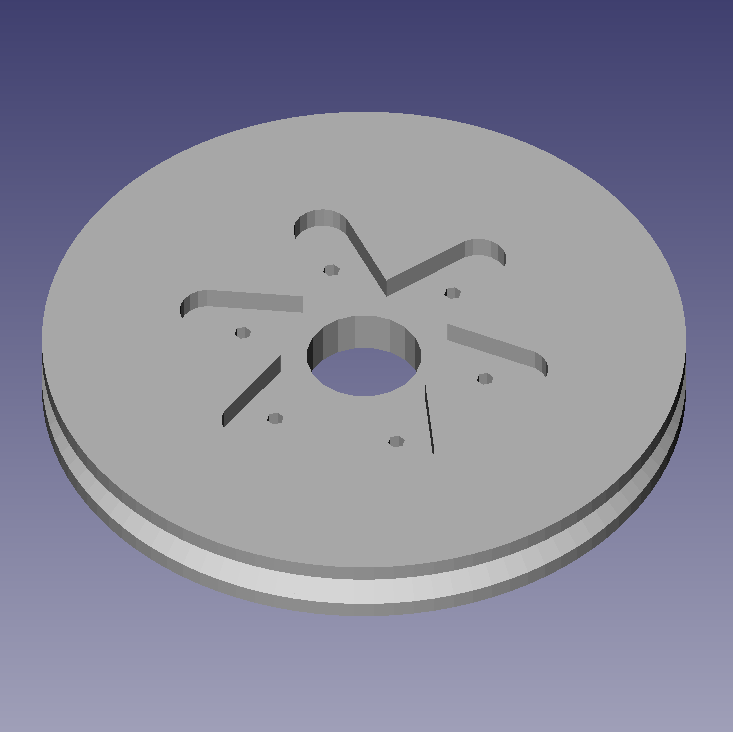
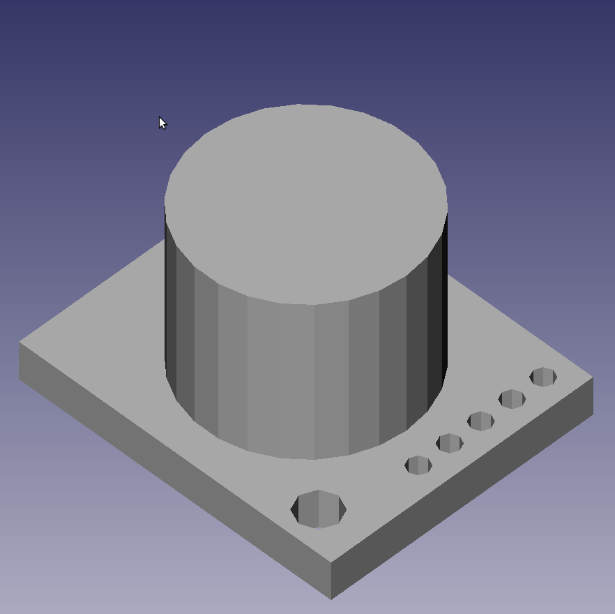
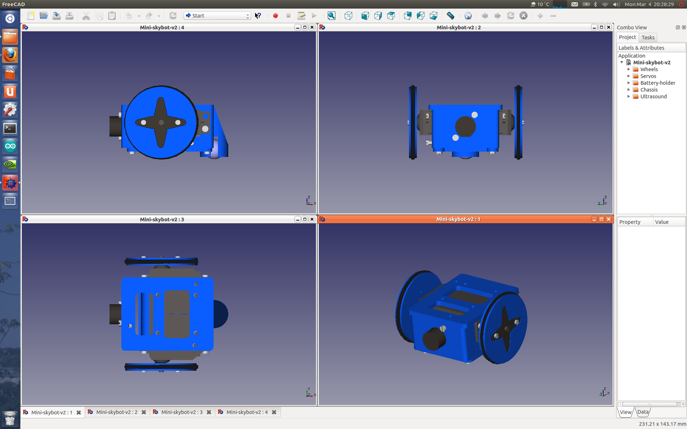

Miniskybot 2
De WikiRobotics

Contenido
[ocultar]Robot Miniskybot: Página principal
|
 |
Robot Miniskybot, Página principal |
Introducción

El printbot Miniskybot 2 es la segunda generación de la familia de robots imprimibles Miniskybot. Ha sido financiado y desarrollado dentro del grupo de Robótica y Cibernética de la Universidad Politécnica de Madrid. Las mejoras del robot son:
- Chásis simplificado
- Canica como rueda loca
- Portapilas atornillado al chásis
- Diseño pequeño y compacto
- 3 Tipos de ruedas: para servos con corona circular, de 4 ó 6 brazos
- Compatible con las tarjetas Skymega y Arduino UNO
Piezas
| Imagen | Pieza (STL) | Tiempo impresión | Descripción |
|---|---|---|---|
|  |
chassis.stl | xxx | Chásis del robot |
|  |
battery_holder.stl | xxx | Portapilas, para 4 pilas AAA |
|  |
Servo-wheel-rounded-horn.stl | xxx | Rueda para cabeza de servo circular |
|  |
Servo-wheel-4-arm-horn.stl | xxx | Rueda para cabeza de servo de 4 brazos |
|  |
Servo-wheel-6-arm-horn.stl | xxx | Rueda para cabeza de servo de 6 brazos |
|  |
fake_ultrasound.stl | xxx | (Opcional). Ultrasonidos imprimible (falso). Para rellenar el hueco si no se usa ninguno. |


Descarga
| Miniskybot-v2-Openscad.zip | Fuentes del Miniskybot v2 en Openscad |
| Mini-skybot-v2.fcstd | Robot ensamblado. Fuentes en Freecad |
| Mini-skybot-v2-exploded_view_drawing.fcstd | Diagrama de montaje. En Freecad |
| Futaba-doc.pdf | Planos del servo Futaba 3003 (PDF) |
| Battery-holder-doc.pdf | Plano del portapilas (PDF) |
| servo-wheels-doc.pdf | Plano de las ruedas (PDF) (con corona de 4 brazos) |
| chassis-doc.pdf | Plano del chásis (PDF) |
| Miniskybot-doc-svg.zip | Planos del miniskybot en svg |
Videos
| 300|250</youtube>
09/Jun/2012: Miniskybot 2 controlado mediante wiimote |
300|250</youtube>
24/Abril/2012: 5 Miniskybots 2 al ritmo de paquito el chocolatero |
| 300|250</youtube>
17/Abril/2012: Siguiendo una línea negra |
300|250</youtube>
6/Marzo/2012: Prueba de concepto |
Otros vídeos:
- Identificación de Miniskybots mediante códigos QR
- Controlando el Miniskybot 2 mediante ROS
- Simulación del Miniskybot 2 en Octave/Matlab
- Controlando el Miniskbyto 2 con Kinect
- Prueba de concepto del Skyball: Un Miniskybot 2 modificado dentro de una esfera
Fotos
| Álbum de fotos completo |
|---|


Planos del Robot
- Están en la sección de descargas, y también en el repositorio
Montaje
Material necesario

| Las 4 piezas imprimibles del robot |
| 2 servos de tipo Futaba 3003 o compatibles |
| 2 juntas tóricas de 50mm de diámetro interior y 3mm de grossor |
| 1 Sensores de ultrasonidos (SRF02) (Opcional) |
| Una canica de 16mm de diámetro |
| 23 tuercas M3 |
| 8 tornillos M3x10mm |
| 6 tornillos M3x6mm |
| Un conector molex hembra de 2 vías |
| 2 pines para el conector molex |
| Un poco de termorretráctil |
| Trozos de cable (rojo y negro) de unos 15cm |
| 3 trocitos de papel de plata |
| 4 separadores macho-hembra de M3 x 10mms |
| Una tarjeta Skymega (O un Arduino UNO) |
Modelo 3D


Plano de montaje

Instrucciones de montaje
Repositorio
Enlaces
Autores
Créditos
Licencia
| |

|
Enlaces
- Array de sensores IR, en Bricogeek
- Hoja de Datos del array de sensores IR
Noticias
- Abril/2013: Miniskybot publicado en Fabfabbers
- 18/Marzo/2013:
- Añadida documentación
- Publicado en thingiverse
- Publicado en Rascomras
- 17/Abril/2012: (Blog) El Miniskybot 2 siguiendo una línea negra
- 25/Mar/2012: (Blog) (Thingiverse) Nuevas ruedas, para servos con corona de 4 y 6 brazos
- 08/Mar/2012: Comenzada esta página
- 06/Mar/2012: (Blog) Prueba de concepto del Miniskybot 2